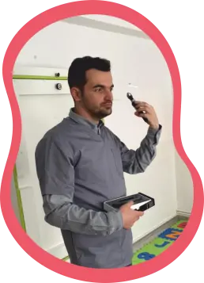
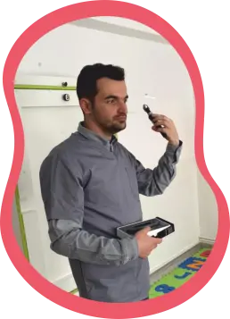

Partenerii educaționali joacă un rol important în susținerea și îmbunătățirea calității educației în învățământul preșcolar. Aceștia pot include părinții, comunitatea locală, organizații non-guvernamentale, medici, instituții culturale, și alți membri ai societății. Rolul lor în educația preșcolară este esențial, având impact asupra dezvoltarii copiilor pe mai multe niveluri.
 


Hoffnung - für eine neue Generation, Germania
Asociația Creștină de Caritate „Samariteanul”, Arad
Fundația „Elpis”, Cluj-Napoca
Biserica Creștină „Sion”, Sibiu
Dr. Bunescu Samuel, Medic Pediatru
Dr. Gut Ana-Maria, Medic Stomatolog
Dr. Cutean Iulia, Medic Oftalmolog
As. Trif Lidia, Asistent Medical
Prof. Cigher Daniela, Profesor de Limba și Literatură Română
ISU Sibiu
Poliția Română
Teatrul „Cipilici”, Sibiu
Centrul M.A.M.A.
Radio Vocea Evangheliei, Sibiu
Radio „Vestea Buna”, Sibiu
Grădinița „Havila”, Cisnadie
Editura „Samariteanul”, Arad